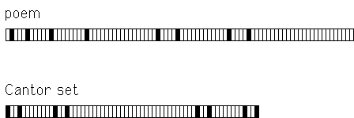

| In Wallace Stevens' poem "The Sail of
Ulysses (Canto I)" Pollard-Gott took know as the root. Here are the
occurrences of know in the poem. |
| The Sail of Ulysses (Canto I) |
| If knowledge and thing known are one |
| So that to know a man is to be |
| That man, to know a place is to be |
| That place, and it seems to come to that; |
| And if to know one man is to know all |
| And if one's sense of a single spot |
| Is what one knows of the universe, |
| Then knowledge is the only life, |
| The only sun of the only day, |
| The only access to true ease, |
| The deep comfort of the world and fate. |
|
| and here is the box-graph of the occurrences of the root,
followed by (the third iterate of) a mathematical Cantor set of the same
general pattern. |
|  |
| Note the
occurrences of the seed split into two components, each of
which splits further into two components (the right is clearer than the
left), each of which splits again into two components. |
The match is not perfect, but then recall natural fractals
such as mountain ranges are not perfect mathematical fractals, either.